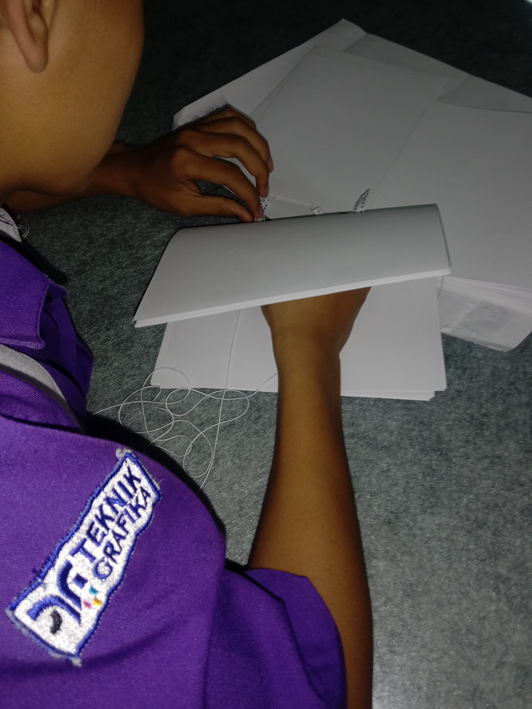
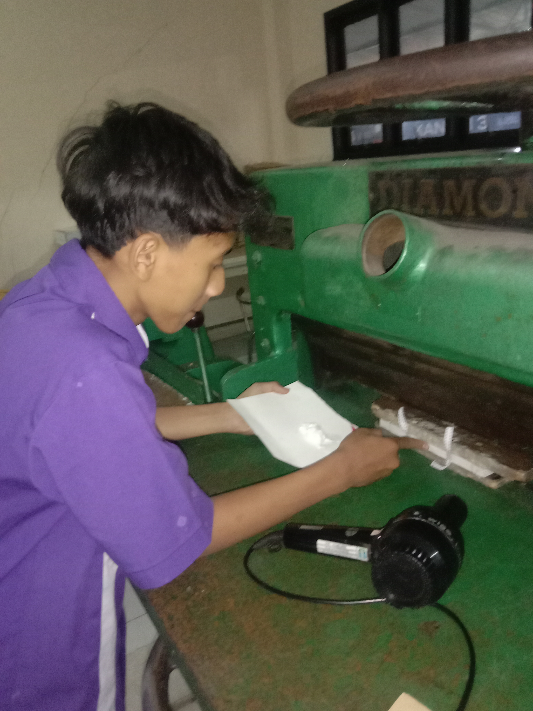
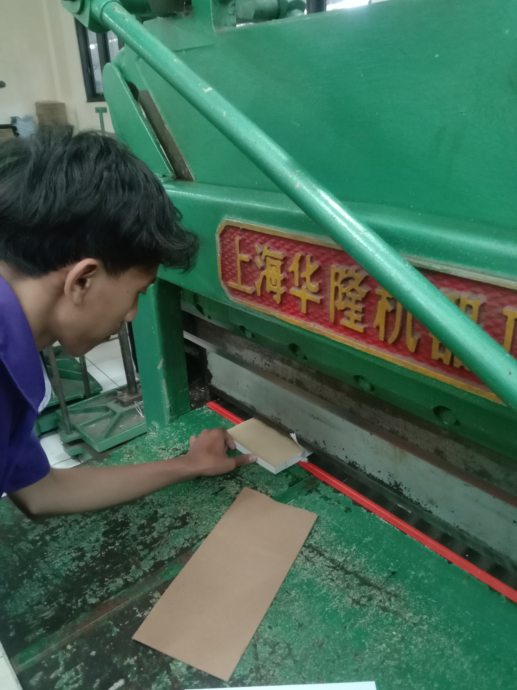
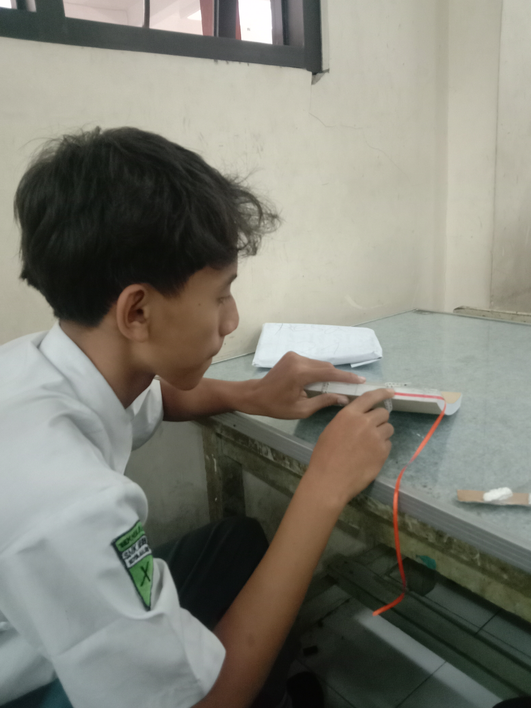
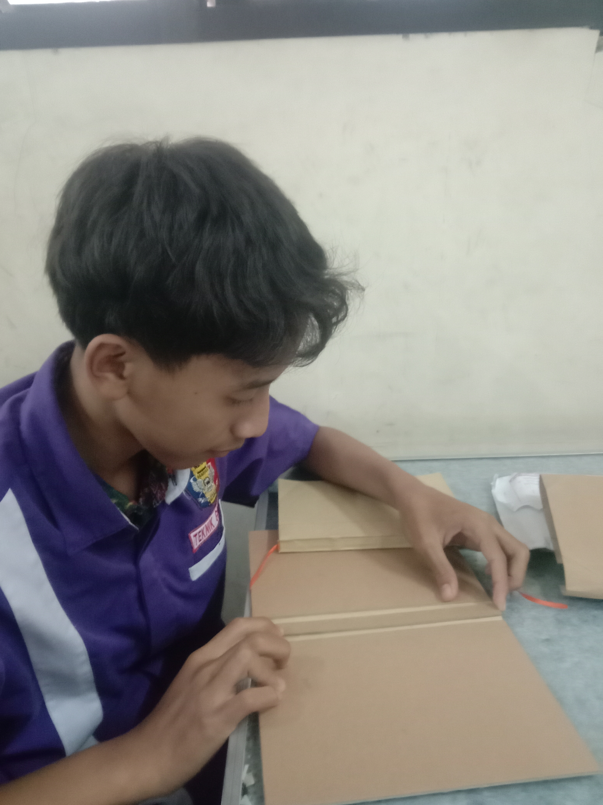
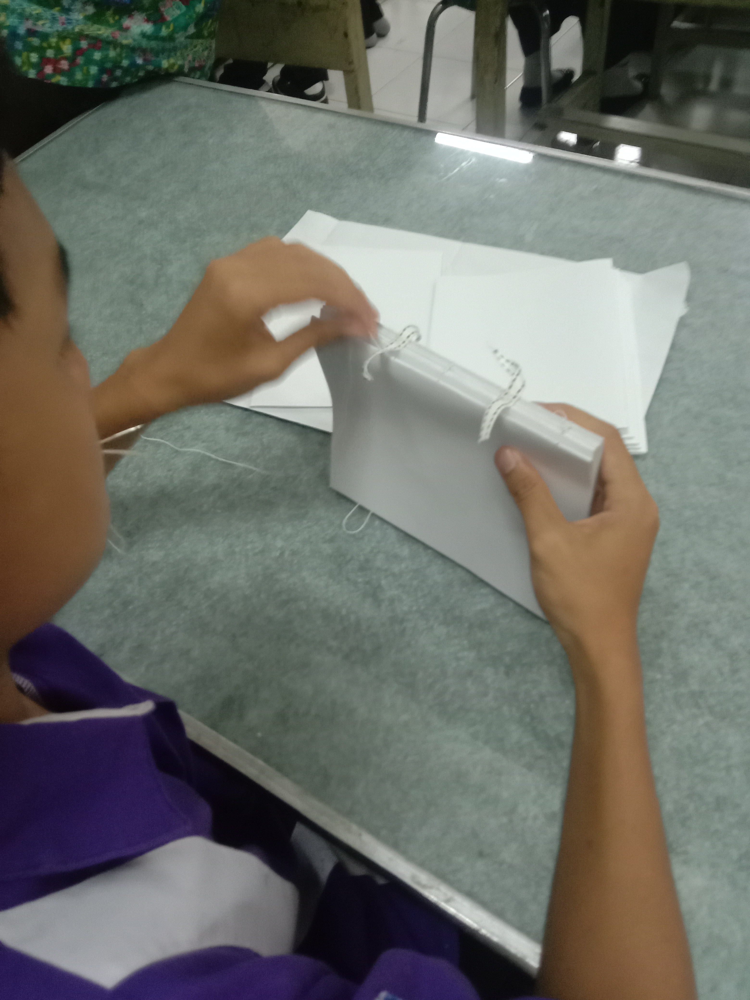
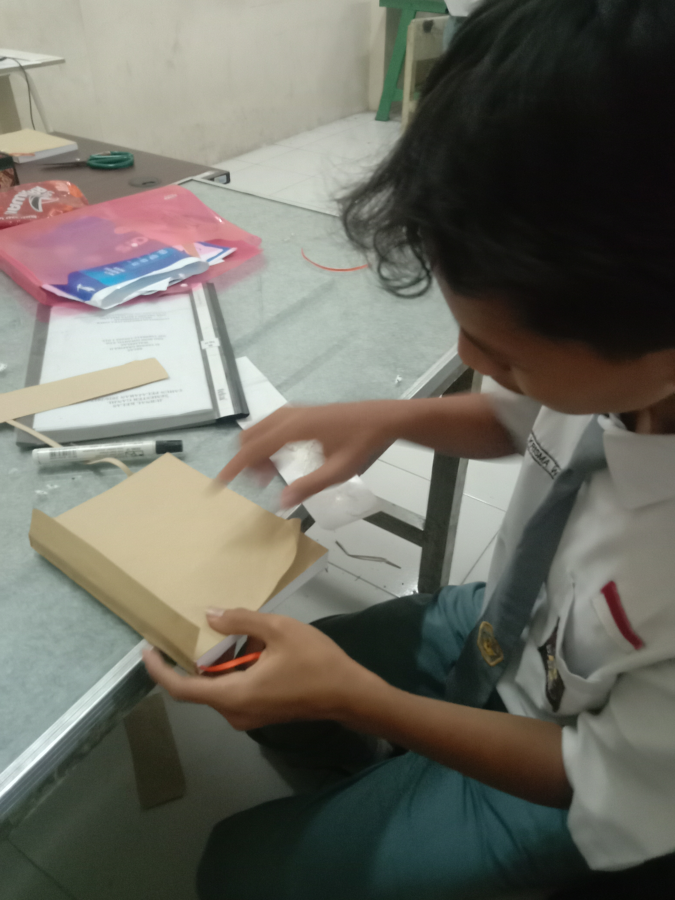
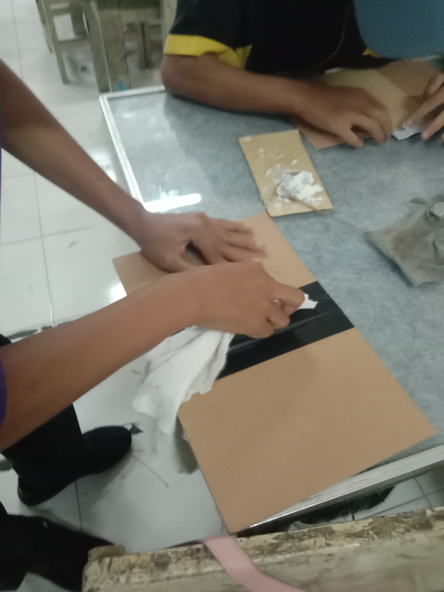
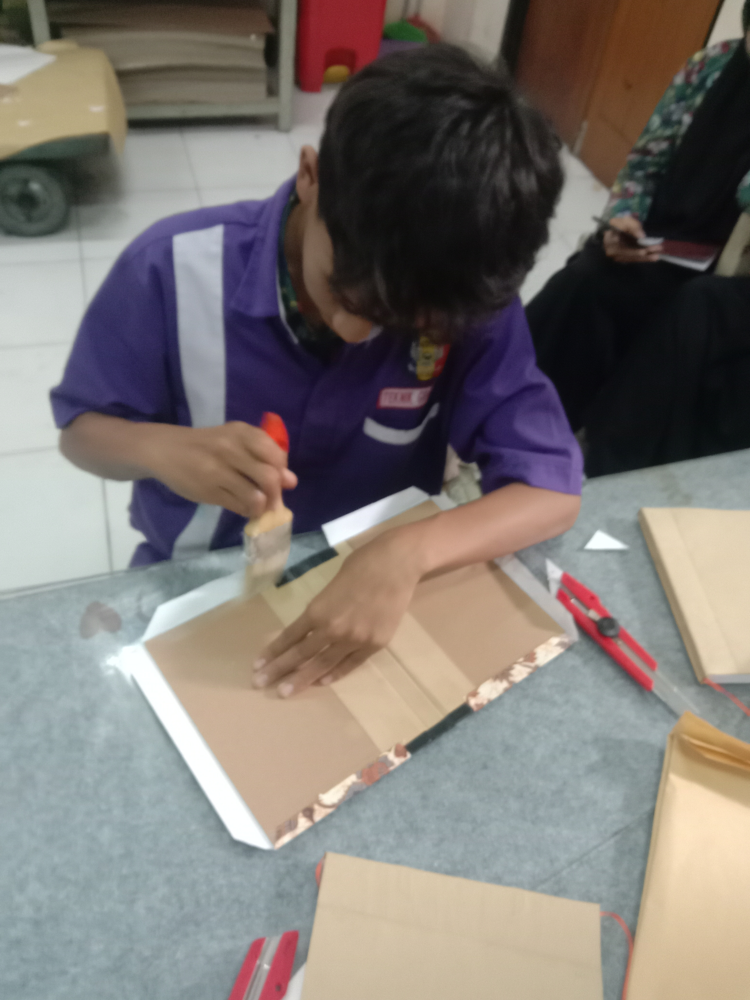
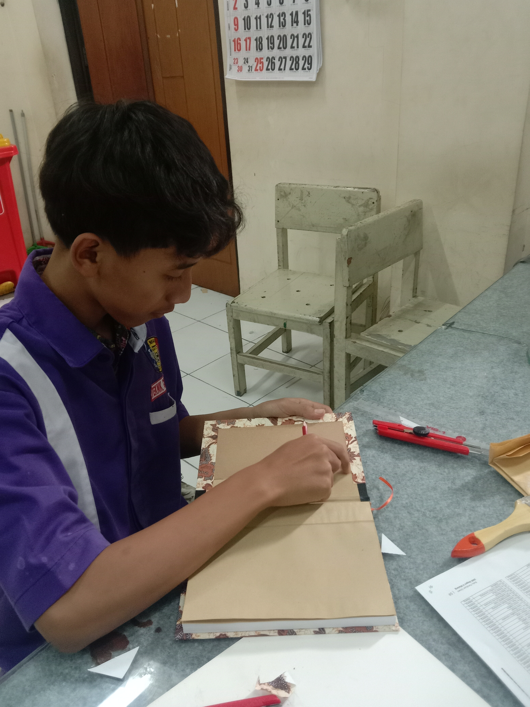

Dokumentasi 3:4Project
Pembuatan Tas Dengan Sablon Manual.
Pembuatan tas ini bertujuan untuk memenuhi tugas dalam PJBL salah satu nya yaitu pembuatan Tas
Penjelasan
Proyek Pembuatan Buku merupakan bagian dari kegiatan Project Based Learning (PJBL) yang dilaksanakan untuk memenuhi tugas pembelajaran. Kegiatan ini dibimbing oleh Bapak Wageyanto dan dikerjakan di Laboratorium TJK 1. Proses pengerjaan berlangsung pada tanggal 4 sampai 12 Agustus. Selama periode tersebut, proyek difokuskan pada pembuatan buku sesuai arahan pembimbing dan ketentuan tugas yang diberikan.
Detail Dokumentasi
Dokumentasi 1
Proses Penjahitan Buku
Deskripsi
Pada tahap ini, seluruh kuras atau bagian isi buku dijahit hingga menyatu menjadi satu blok buku. Proses penjahitan dilakukan agar halaman-halaman tersusun kuat, rapi, dan tidak mudah terlepas saat buku digunakan.

Dokumentasi 3:4Dokumentasi 2
Pengeleman Punggung Buku
Deskripsi
Setelah kuras buku tersusun dan dijahit, bagian punggung buku diberi lem untuk memperkuat ikatan antarhalaman. Tahap ini membantu membuat blok isi buku lebih kokoh sebelum masuk ke proses berikutnya.

Dokumentasi 3:4Dokumentasi 3
Proses Pemotongan Buku
Deskripsi
Tahap pemotongan dilakukan untuk merapikan sisi-sisi buku dan menyesuaikannya dengan ukuran yang dibutuhkan. Hasil potongan yang rapi membuat halaman buku terlihat sejajar dan lebih nyaman saat dibaca.

Dokumentasi 3:4Dokumentasi 4
Proses Penambahan Pita Buku
Deskripsi
Pada tahap ini, pita ditambahkan pada buku sebagai pelengkap. Pita tersebut dipasang sesuai kebutuhan agar buku memiliki fungsi tambahan dan tampilan yang lebih rapi.

Dokumentasi 3:4Dokumentasi 5
Proses Pembuatan Hard Cover
Deskripsi
Tahap ini merupakan proses awal pembuatan hard cover atau sampul keras buku. Hard cover disiapkan sebagai pelindung bagian luar buku agar isi buku lebih terlindungi dan tampilannya lebih kuat.
Galeri Foto
Dokumentasi Lainnya




